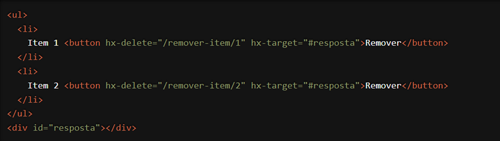

Estamos animados em compartilhar com você uma das funcionalidades mais práticas e poderosas do HTMX: o atributo `hx-delete`. Com `hx-delete`, você pode remover dados no servidor usando uma requisição HTTP DELETE diretamente a partir de elementos HTML, sem a necessidade de escrever código JavaScript adicional. Vamos explorar como essa funcionalidade pode simplificar e aprimorar o desenvolvimento de suas aplicações web.
O que é o atributo `hx-delete`?
O `hx-delete` é um atributo do HTMX que facilita a remoção de dados no servidor utilizando o método HTTP DELETE. Isso significa que você pode realizar operações de exclusão de maneira declarativa, diretamente no HTML, simplificando a lógica de interatividade e tornando seu código mais limpo e fácil de manter.
Como Funciona?
Vamos ver um exemplo prático para entender melhor como o `hx-delete` pode ser usado. Suponha que você tenha uma lista de itens e queira permitir que os usuários excluam itens dessa lista:

Neste exemplo, quando o usuário clica no botão "Remover" ao lado de um item, o HTMX faz uma requisição HTTP DELETE para a URL especificada em `hx-delete` (neste caso, "/remover-item/1" ou "/remover-item/2"). A resposta do servidor é então inserida no elemento alvo especificado em `hx-target` (neste caso, o `div` com id "resposta"). Tudo isso acontece sem recarregar a página, proporcionando uma experiência de usuário mais fluida e eficiente.